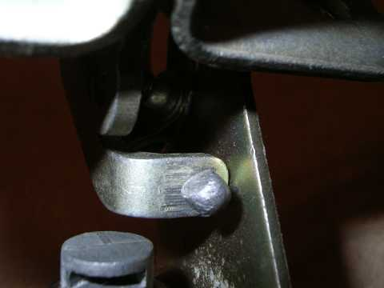

Зашёл я как-то в магазин радиодеталей, и купил активатор... Потом он долго валялся у меня на столе, мозолил глаза... И решил я его наконец куда-нибудь применить.
Идея не моя, я просто разместил объяву... Тьфу, я просто реализовал идею, которую углядел в фотоальбоме у ig99, за что ему отдельное спасибо.
Там было 2 варианта, один самого ig99, второй - LGG c форума izhauto.ru (этот вариант в конце альбома).
Я выбрал вариант от LGG, поскольку он показался попроще, и не требовал пилить дыру в двери.
Внимание! Я ликвидировал шпынёк, который позволяет открыть замок ключом. Теперь мой багажник можно будет открыть только активатором. В принципе его можно оставить, только придётся немного по-другому сделать крепление тросика к язычку.
Что-то типа вот этого:
Для работы нам потребуется следующее:
Снимаем замок и приносим его домой.
Для снятия замка достаточно открутить всего 2 болта. Они расположены по диагонали, и их можно узнать по наличию под ними шайбочек.
Вынимаем личинку замка, выбиваем оську, снимаем шпынёк:
И выкидываем нафиг - он нам больше не пригодится. Если выкидывать жалко, можно убрать в запас... Личинку ставим на место, без неё получится дырка в двери багажника.
Сверлим 2 отверстия. Одно (поз. 1 на фото) - под медную трубку (диаметр зависит от диаметра трубки), второе (поз. 2 на фото) - в язычке, под тросик. В язычке сверлить трудно, он закалённый. Моё китайское сверло по металлу на 2 мм согнулось(!), так и не сделав даже малейшего углубления... Тогда я засверлился победитовым сверлом по бетону, а потом - другим китайским, уже на 3 мм.
Ножовкой по металлу отпиливаем кусок трубки. Лучше с запасом, так легче гнуть. Гнём трубку. Это довольно творческий процесс, надо добиться плавного изгиба, и при этом вывести концы трубки в нужные положения. Путём долгих примерок я добился нужного изгиба. Очень важно, чтобы тот конец трубки, который выходит к язычку, выходил перпендикулярно плоскости язычка в открытом положении замка:
Добившись нужного изгиба, отпиливаем лишнее, надеваем на трубку хомутик из железки от конструктора (можно из любой другой железки), и намечаем место для третьего отверстия. Сверлим отверстие, и закрепляем хомутик заклёпкой. (Можно конечно и просто болтиком):
На фото видно, что правильный изгиб вышел у меня не с первого раза... Зелёное - это термоусадочная трубка, для более плотного прилегания хомутика.
Привинчиваем планку активатора имеющимся там болтиком (предварительно расширив отверстие в планке, ибо болтик толстый), привинчиваем активатор. Активатор лучше привинтить так, чтобы потом его можно было отодвинуть от замка.
Кусачками откусываем кусок тросика от велосипедного тормоза. В оригинале там какая-то проволочка, мне она не внушила доверия... Я пробовал провод МГТФ (он хорошо скользил в трубке, но начал перетираться о края), и оплётку от экранированного провода (сломалась на 20й раз). Так что мне кажется, что тросик - оптимальный вариант.
Просовываем тросик в язычок:

потом в трубку, потом в отверстие активатора:
Потом суём трос обратно в отверстие активатора, получается петля. В петлю суём болтик, максимально стягиваем петлю, и затягиваем гайку на болтике:
Проверяем работу устройства, регулируем при необходимости положение активатора...
Потом думаем, что делать с бардаком, произведённым во время работы:
Потом идём в гараж, и устанавливаем всё на место:
Вот как я вывел провода:
Самое сложное - протащить провод внутри двери багажника... Однако всё решаемо.
Кнопку я поставил справа от руля, там было круглое отверстие с заглушкой, как раз подходящее для кнопки открывания багажника от десятки.
Ещё у моей сигналки есть выход для этого дела, но пока руки не дошли.
Ну что сказать, работает. Правда, приходится после открытия вручную возвращать активатор в закрытое положение, без этого дверь не захлопывается. Надо будет поставить возвратную пружинку.
Ещё хорошо бы накрыть всё это дело каким-нибудь кожухом...
Но в общем - я очень доволен.
25 ноября 2006г.